Le planeur qui va le plus loin
Ton équipe conçoit un planeur dans l'atelier 3D du site. Il est imprimé en 3D, puis lancé à la main. La même ligne de départ et les mêmes règles pour tous : c'est ta conception qui fait la différence.
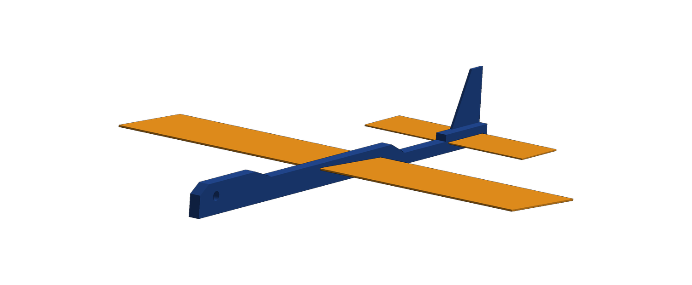
La règle du jeu
- Équipes de 2 ou 3. Un planeur par équipe.
- Chaque planeur est lancé 3 fois, à la main, depuis la ligne de départ, par le même élève de l'équipe. On garde la moyenne des 3 distances.
- Le lancer se fait à plat, droit devant, les pieds derrière la ligne. On le lance franchement, sans viser le haut.
- La distance se mesure de la ligne de départ jusqu'au premier point où le planeur touche le sol.
- Tu as droit à deux versions : la version 1, puis une version 2 améliorée après les essais.
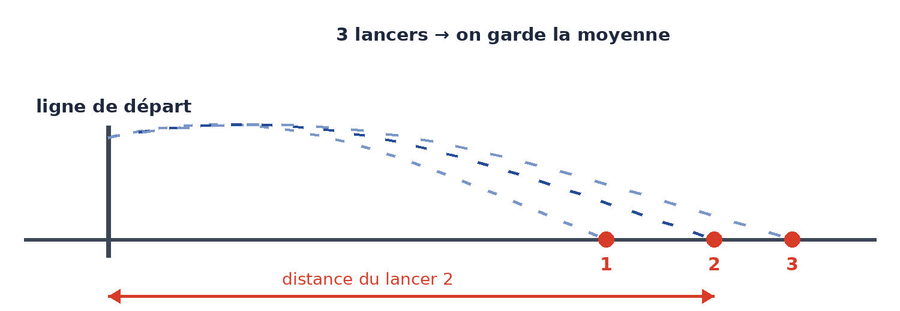
De quoi est fait un planeur
Trois pièces imprimées, qui s'emboîtent sans colle. C'est le planeur de départ : tu vas l'étudier dans l'atelier 3D, puis le transformer.
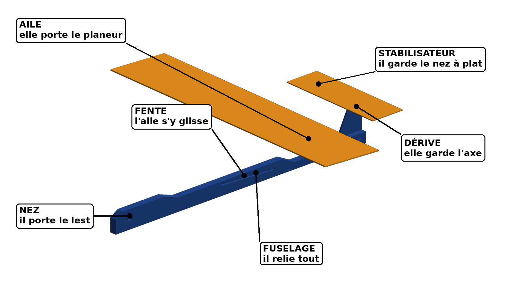
Le cahier des charges
Le besoin : un planeur lancé à la main, qui parcourt la plus grande distance possible. Les contraintes : un planeur qui ne respecte pas une de ces lignes n'est pas imprimé.
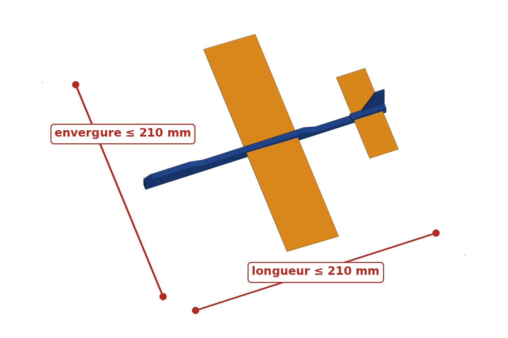
| N° | Ce qu'on demande | Limite | Pourquoi |
|---|---|---|---|
| C1 | Envergure (largeur totale de l'aile) | 210 mm maximum | Taille du plateau de l'imprimante |
| C2 | Longueur du fuselage | 210 mm maximum | Taille du plateau de l'imprimante |
| C3 | Masse totale, lest compris | 30 g maximum | Un planeur lourd tombe vite |
| C4 | Nombre de pièces | 3 : fuselage, aile, stabilisateur | Montage sans colle, par les fentes |
| C5 | Épaisseur du fuselage | 5 mm | Assez solide pour tenir l'aile, assez large pour le tenir entre deux doigts |
| C6 | Épaisseur des pièces | multiple de 0,2 mm | L'imprimante dépose des couches de 0,2 mm |
| C7 | Impression | chaque pièce à plat, sans support | Rapide, et ça ne rate pas |
| C8 | Matière | PLA, lest autorisé dans le nez | Une vis, de la pâte à fixe |
Le vocabulaire de l'ingénieur
Dix mots que tu vas utiliser pendant tout le projet, et le jour de la présentation.
| Mot | Ce que ça veut dire | Dans notre projet |
|---|---|---|
| Besoin | Ce à quoi le produit doit servir | Un planeur lancé à la main, qui va le plus loin possible |
| Fonction | Ce que le produit doit faire | Planer, rester stable, résister au lancer |
| Exigence | Une fonction avec un chiffre qu'on peut vérifier | Masse de 30 g maximum, envergure de 210 mm maximum |
| Contrainte | Une limite imposée, qu'on ne choisit pas | La taille du plateau de l'imprimante, le PLA, trois pièces |
| Coût | Ce qu'il faut dépenser pour le faire | Le fil, l'électricité, le temps |
| Valeur | Ce qu'il apporte à celui qui s'en sert | Un planeur qui va loin, et qu'on reconnaît |
| Amélioration | On rend meilleur ce qui existe déjà | Ta version 2 |
| Innovation de rupture | Une idée qui change la façon de faire | L'impression 3D : une pièce fabriquée sans moule ni outil |
| Maquette | Elle sert à montrer une idée et à en discuter | Ton dessin de l'onglet « Créer », ton modèle de l'atelier 3D |
| Prototype, puis produit | Le premier objet réel, qu'on teste ; puis l'objet final | Ta version 1 ; puis le planeur du concours |
Ce que coûte ton planeur, et ce qu'il devient
Un ingénieur ne regarde pas seulement si son produit marche. Il regarde aussi ce qu'il coûte et ce qu'il laisse derrière lui. Voici la vie de ton planeur, du début à la fin : c'est son cycle de vie.
- La matièreLe PLA est un plastique fabriqué à partir d'amidon de plantes (maïs, canne à sucre).
- Le transportLa bobine de fil est fabriquée loin d'ici, puis elle voyage jusqu'à Tahiti.
- La fabricationL'imprimante fait fondre le fil : elle consomme de l'électricité. À plat et sans support, presque rien n'est jeté.
- L'utilisationAucune énergie : ton bras suffit.
- La fin de vieLe PLA ne se décompose pas dans un jardin : il lui faut une installation industrielle. Une pièce ratée est un déchet.
À discuter en équipe : à quelle étape ton planeur pèse-t-il le plus sur l'environnement ? Que deviennent les pièces ratées au lycée ? Que peux-tu faire pour imprimer moins ?
Pour le professeur : fichiers à imprimer
Catapulte (version 2), facultative : les essais se font à la main, elle ne sert que si tu veux un lancer mécanique. Fichiers : rail avant · rail arrière · chariot · manchon de jonction · pied avant · pied arrière. Il faut en plus deux tiges de 3 mm (clous ou vis M3 de 20 mm) et un élastique. Mode d'emploi en images : 1. montée et armée · 2. le montage · 3. vue en coupe · 4. après le tir · schéma de côté.
Planeurs de démonstration (version 2) (ils gardent un crochet sous le nez, qui sert aussi de prise pour les doigts), une aile et un stabilisateur pour les trois fuselages : aile · stabilisateur · fuselage de référence · fuselage qui cabre · fuselage qui pique. Aperçu.
Planeur de départ des élèves (celui des missions 3 à 6, pour le tester avant eux) : fuselage · aile · stabilisateur. Il lui faut environ 3,9 g de lest dans le trou du nez, pour un point d'équilibre à 100 mm du nez.
Fuselages et chariot à 100 % de remplissage, posés à plat. L'aile s'imprime debout sur son bord d'attaque, avec une bordure d'adhérence. Les limites du cahier des charges et le barème se changent directement dans cette page (entrainements/2si-planeur.html).
Sept idées pour comprendre pourquoi un planeur vole loin. Dans les cadres « À toi de jouer », bouge les curseurs et regarde ce qui change. Chacune se termine par ce qu'elle change pour ton planeur. Lis les trois premières avant de dessiner, les autres avant de le transformer.
Trois forces sur un planeur
- La portance tient le planeur en l'air. Elle vient de l'aile, et seulement quand le planeur avance.
- Le poids le tire vers le bas. Il dépend de la masse : 20 g ou 30 g, ça change tout.
- La traînée le freine. Un planeur n'a pas de moteur : il ralentit et descend peu à peu.
Pour ton planeur : une grande aile porte plus, mais elle pèse plus lourd et freine plus. Tout le projet consiste à trouver le bon compromis.
La finesse : combien il avance pour 1 m de descente
Une finesse de 6 veut dire : 6 m en avant pour 1 m de descente. C'est la note de ton planeur : plus elle est grande, plus il va loin en partant de la même hauteur.
| Objet | Finesse | Lâché à 1,5 m, il se pose à… |
|---|---|---|
| Une feuille de papier froissée | presque 0 | tes pieds |
| Un petit planeur imprimé | 3 à 6 | 4,5 m à 9 m |
| Un vrai planeur de compétition | plus de 40 | plus de 60 m |
Pour ton planeur : ce qui améliore la finesse, c'est moins de traînée (fuselage fin, pièces bien droites, pas de bavures) et une aile longue et étroite (notion 7). En lançant à la main, tu ajoutes de la vitesse : la distance dépend aussi du lancer, c'est pour ça que le même élève lance toujours de la même façon.
Le centre de gravité : le réglage qui décide de tout
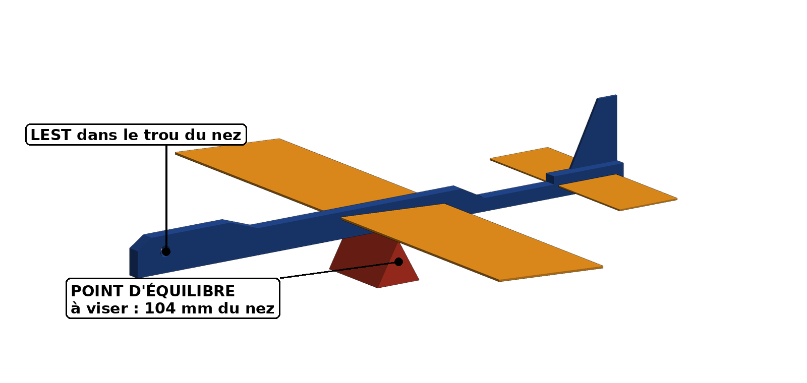
Le centre de gravité (on l'écrit G) est le point où le planeur tient en équilibre. Pose-le sur un doigt : G est juste au-dessus.
Voilà ce que ça donne en vol :
il lève le nez, ralentit, tombe
il vole à plat, loin
il pique
Pour ton planeur : on règle G avec du lest dans le nez, par petites quantités (1 à 3 g). Pas assez, il cabre. Trop, il pique. Si l'arrière de ton planeur est léger, il faut moins de lest, et le planeur entier est plus léger.
La charge alaire : la masse que porte chaque cm² d'aile
Plus la charge alaire est petite, plus le planeur peut voler lentement sans tomber. Un planeur chargé doit aller vite, et un lancer un peu mou ne lui suffit pas.
Pour ton planeur : deux façons de baisser la charge alaire : enlever de la masse (pièces plus fines, arrière allégé, donc moins de lest) ou agrandir l'aile (mais elle pèse alors plus lourd). Le planeur de départ est à environ 0,30 g/cm².
La stabilité : ce qui le garde droit
- Le stabilisateur (la petite aile arrière) agit comme les plumes d'une flèche : si le nez monte ou descend, il le ramène à plat.
- La dérive (la partie verticale) fait la même chose pour la gauche et la droite : elle garde le planeur dans l'axe.
- Une aile en V (les bouts plus hauts que le milieu) remet le planeur à plat quand il penche sur le côté.
Pour ton planeur : un stabilisateur et une dérive trop petits, et le planeur part dans tous les sens. Trop grands, ils alourdissent la queue et il faut plus de lest. Le planeur de départ a un stabilisateur qui fait environ un quart de la surface de l'aile : c'est un bon repère.
Le calage : pourquoi la fente de l'aile penche
L'aile est un peu relevée à l'avant par rapport au stabilisateur. Cette petite inclinaison s'appelle le calage. Sans elle, l'aile ne porte pas assez et le planeur plonge.
Pour ton planeur : garde l'inclinaison de la fente du planeur de départ (2,4 mm sur 45 mm). Si ton planeur bien équilibré monte quand même en cloche, la fente penche trop. S'il descend trop vite, elle ne penche pas assez.
La forme de l'aile : longue et étroite, ou courte et large ?
À surface égale, une aile longue et étroite freine moins qu'une aile courte et large : l'air s'échappe moins par les bouts. C'est pour ça que les vrais planeurs ont des ailes immenses et fines.
Pour ton planeur : l'envergure est limitée à 210 mm. Pour augmenter l'allongement, il reste à réduire la corde ou à effiler les bouts. Mais une aile trop étroite et trop fine se plie au lancer.
En résumé : sur quoi jouer
| Je veux… | Je joue sur… | Notion |
|---|---|---|
| Qu'il vole à plat, sans cabrer ni piquer | Le lest du nez, pour placer le centre de gravité entre 25 % et 40 % de la corde | 3 |
| Qu'il aille plus loin | La traînée (fuselage fin, pièces propres) et l'allongement de l'aile | 2 et 7 |
| Qu'il vole lentement, en douceur | La masse : chaque pièce plus légère, surtout à l'arrière | 4 |
| Qu'il reste droit | Le stabilisateur, la dérive, une aile bien centrée | 5 |
| Qu'il ne plonge pas | L'inclinaison de la fente de l'aile | 6 |
Chaque notion a ses questions dans les séries notées « Planeur 1 », « Planeur 2 » et « Planeur 3 » de ton tableau de bord.
Suis les étapes dans l'ordre. Le cadre bleu en haut de la page te dit toujours la prochaine chose à faire. Ouvre l'étape en cours, fais chaque ligne, coche-la. On passe à l'étape suivante quand tout est coché. Connecté, tes réponses sont gardées sur ton compte.
Comment ça marche
Tu ne pars pas d'une page blanche. Les missions 1 à 6 te font construire, cote par cote, un planeur de départ qui vole. La mission 7 est la tienne : tu le transformes pour qu'il aille plus loin que celui des autres équipes.
Onshape marche dans le navigateur, au lycée comme à la maison, et il est gratuit pour les élèves.
- Va sur onshape.com → Éducation → créer un compte. Choisis « Étudiant », avec ton adresse e-mail. Note ton mot de passe dans ton cahier.
- Ouvre cad.onshape.com, connecte-toi, puis Créer → Document. Nomme-le
Planeur – équipe …. - Clique sur Partager (en haut à droite) et ajoute l'adresse e-mail de tes coéquipiers et de ton professeur.
Si un bouton est en anglais : Sketch = Esquisse, Line = Ligne, Dimension = Cote, Extrude = Extruder, Trim = Ajuster, Slot = Rainure, Export = Exporter.
Ma première pièce : une plaque
Tu apprends les trois gestes de base : esquisse, cote, extrusion.
- Dans la liste à gauche, clique sur le plan Face, puis sur Esquisse.
- Choisis l'outil Rectangle et trace un rectangle en partant du point central (l'origine).
- Choisis l'outil Cote (touche D). Clique sur le côté du bas, tape 60. Clique sur le côté gauche, tape 20.
- Regarde les traits : ils sont passés du bleu au noir. Noir veut dire « dimension fixée ».
- Clique sur la coche verte, puis sur Extruder (Maj + E). Profondeur : 5 mm. Valide.
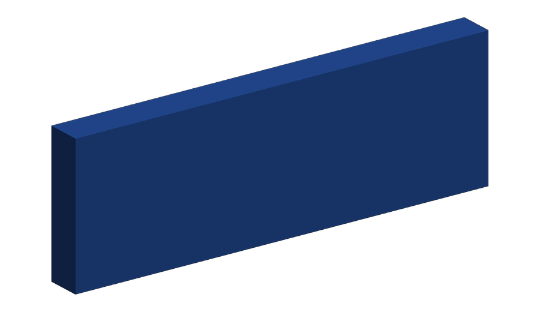
Mission réussie si tu fais tourner à la souris une plaque de 60 × 20 × 5 mm, et si son esquisse a tous ses traits noirs.
Un nez en biseau
Tu apprends à tracer un trait incliné avec l'outil Ligne, et à modifier une pièce déjà faite.
- Double-clique sur Esquisse 1 dans la liste à gauche : tu rouvres le dessin de ta plaque.
- Avec l'outil Ligne (touche L), trace un trait incliné qui coupe le coin en haut à gauche de la plaque.
- Avec l'outil Ajuster (Trim, touche M), clique sur les deux petits bouts du coin pour les effacer.
- Mets les 2 cotes du biseau : 12 sur le côté du haut, 8 sur le côté gauche.
- Valide l'esquisse. La pièce se met à jour toute seule.
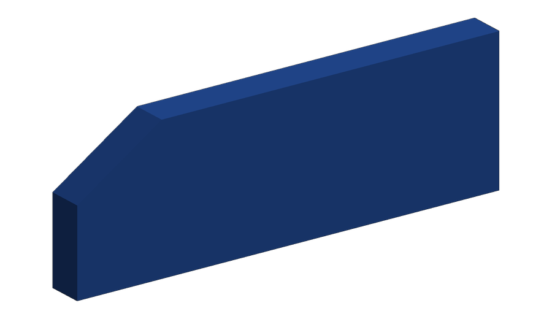
Mission réussie si le coin de ta plaque est coupé, si tous les traits sont noirs, et si la pièce a changé sans que tu refasses l'extrusion.
Le fuselage de départ : le contour
Tu dessines le vrai fuselage, vu de côté, en un seul contour fermé.
- En bas de l'écran, clique sur + puis Créer un atelier de pièces. Nomme-le
Fuselage. - Plan Face → Esquisse. Avec l'outil Ligne, pars de l'origine (c'est le bout du nez, en bas) et trace le contour à peu près, dans l'ordre du dessin, jusqu'à revenir à l'origine. Les traits inclinés se tracent comme le biseau de la mission 2. Ne cherche pas la précision : ce sont les cotes qui la donneront.
- Outil Cote : pour chaque coin, clique sur l'origine puis sur le coin, et tape la distance du dessin. Tire la souris vers le bas pour une distance depuis le nez, vers la gauche pour une hauteur.
- Quand tous les traits sont noirs, valide, puis Extruder de 5 mm.
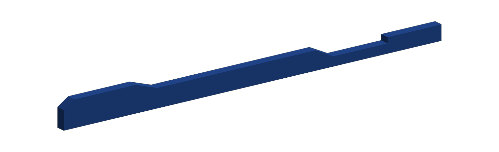
Mission réussie si ton fuselage mesure 210 mm de long, 14 mm de haut au nez, et si son dessous est plat.
Les fentes, le trou de lest et la dérive
Tu apprends à enlever de la matière, et à extruder une zone avec une autre épaisseur.
- Clique sur la grande face plate du fuselage, puis sur Esquisse.
- Fente de l'aile : trace une ligne entre les deux points du dessin, puis transforme-la avec l'outil Rainure (Slot), largeur 1,0. Elle penche : son avant est 2,4 mm plus haut que son arrière, c'est voulu.
- Fente du stabilisateur : même méthode, ligne horizontale, largeur 0,8.
- Trou de lest : outil Cercle, centre aux coordonnées du dessin, diamètre 4,2.
- Valide. Extruder → choisis Enlever et À travers tout, puis clique sur les deux fentes et le cercle.
- Dérive : nouvelle esquisse sur la même face, trace les 4 points du dessin. Extruder → Ajouter, profondeur 1 mm.
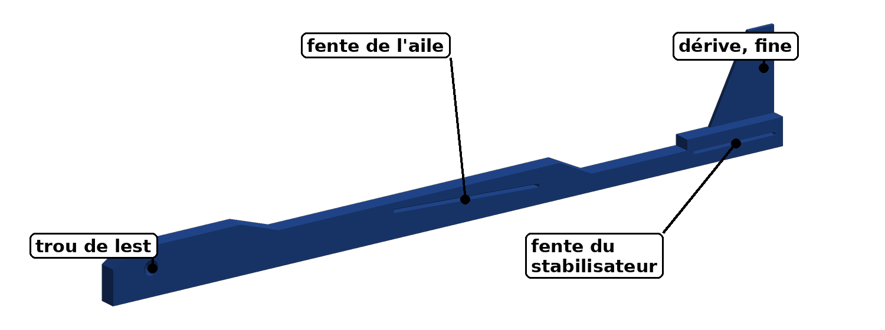
Mission réussie si tu vois le jour à travers les deux fentes et le trou, et si la dérive est bien plus fine que le reste.
L'aile et le stabilisateur de départ
Deux plaques fines, chacune dans son atelier de pièces.
- Crée un atelier de pièces
Aile. Plan Dessus → Esquisse → rectangle de 200 × 45 → Extruder de 0,8 mm (4 couches d'impression). - Crée un atelier de pièces
Stabilisateur. Rectangle de 80 × 25 → Extruder de 0,6 mm (3 couches).
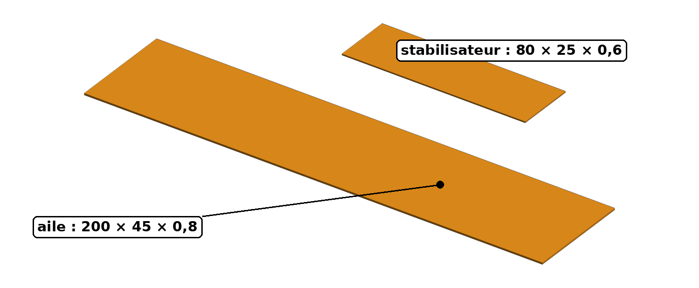
Mission réussie si tu as trois ateliers de pièces : Fuselage, Aile, Stabilisateur.
Vérifier que mon modèle est juste
Avant d'aller plus loin, tu compares ton modèle aux valeurs attendues.
- Dans chaque atelier, clique sur la pièce dans la liste, puis sur l'icône de la balance en bas à droite (« Propriétés de masse »). Relève le volume en cm³.
- Compare avec ce tableau. Un écart de plus de 0,3 cm³ veut dire qu'une cote est fausse : retourne dans l'esquisse.
| Pièce | Volume attendu | Masse en PLA (× 1,24) |
|---|---|---|
| Fuselage | 10,1 cm³ | 12,6 g |
| Aile | 7,2 cm³ | 8,9 g |
| Stabilisateur | 1,2 cm³ | 1,5 g |
| Planeur de départ, sans lest | 23 g |
Ce planeur a la queue un peu trop lourde : sans lest, son point d'équilibre est à 107 mm du nez, un peu trop en arrière. Il lui faut environ 1,7 g dans le trou du nez (une petite vis, ou de la pâte à fixe) pour le ramener vers 100 mm. Total : environ 25 g.
Mission réussie si tes trois volumes sont ceux du tableau.
À toi : rends-le meilleur
Le planeur de départ vole, mais il est lourd : plus léger, il volera plus lentement et pardonnera mieux le lancer. Voici ce que tu peux changer, et les notions de l'onglet « Comprendre » t'expliquent pourquoi.
| Ce que je change | Ce que j'y gagne | Le risque |
|---|---|---|
| Aile plus fine : 0,6 mm au lieu de 0,8 | 2 g de moins | L'aile se plie au lancer |
| Bouts d'aile effilés ou arrondis | Moins de masse, et c'est plus beau | Moins de surface : il porte un peu moins |
| Arrière allégé : poutre moins haute, dérive plus petite | Moins de lest à mettre devant, donc planeur plus léger | Queue fragile, planeur qui part de travers |
| Nez plus long ou plus haut | Le nez fait le lest tout seul | Dépasser 210 mm de long |
| Aile avancée ou reculée | Le point d'équilibre change de place | Planeur qui cabre ou qui pique |
| Stabilisateur plus grand | Vol plus stable | Queue plus lourde |
| Forme du fuselage, nom de l'équipe gravé | Des points d'esthétique | Aucun, tant que les deux fentes gardent leur taille |
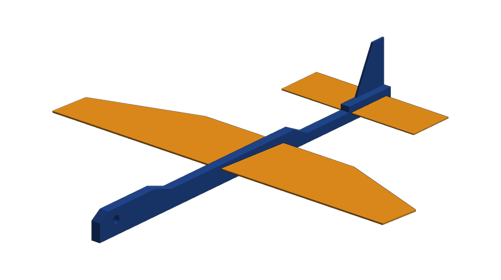
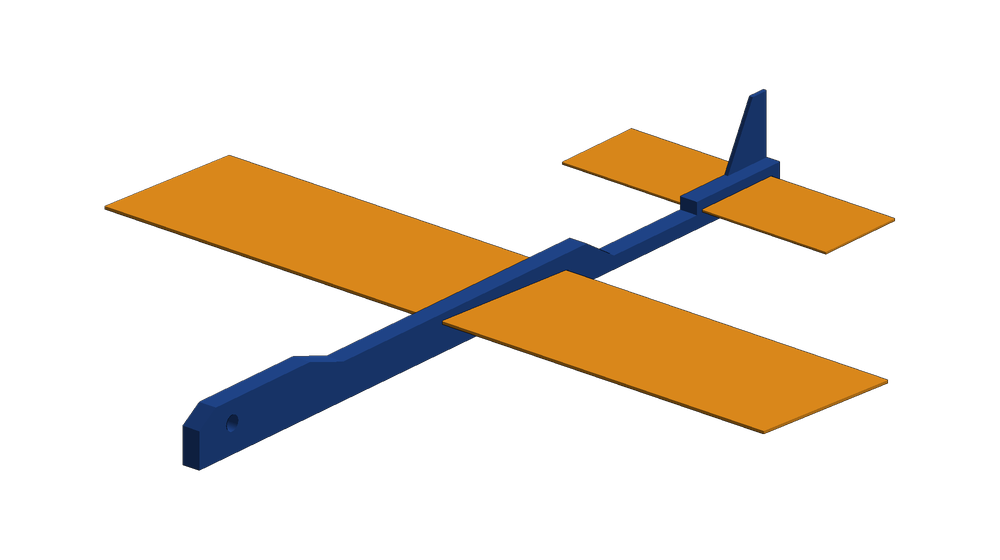
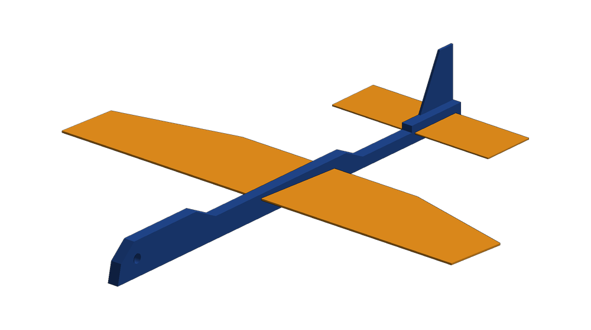
- Fais d'abord une copie : clic droit sur l'onglet de l'atelier → Dupliquer. Tu gardes le planeur de départ intact.
- Change une cote à la fois (double-clic sur la cote dans l'esquisse), et regarde la pièce se mettre à jour.
- Après chaque changement, relève le nouveau volume et recalcule la masse.
- Garde l'épaisseur de 5 mm du fuselage et la largeur des deux fentes : sinon l'aile et le stabilisateur ne tiennent plus.
La règle d'or : le point d'équilibre du planeur fini doit tomber sous l'aile, vers son premier tiers en partant de l'avant. Si tu déplaces l'aile, le point d'équilibre à viser se déplace avec elle.
Mission réussie si ton planeur est plus léger que le planeur de départ, respecte le cahier des charges, et si tu sais expliquer chaque changement.
Exporter pour l'imprimante
Trois fichiers, un par pièce.
- Remplis la fiche de conformité de l'onglet « Les étapes » : toutes les lignes doivent être vertes.
- Clic droit sur la pièce dans la liste → Exporter. Format STL, unité millimètre. Nomme le fichier
equipe_piece_v1.stl. - Envoie les trois fichiers STL à ton professeur.
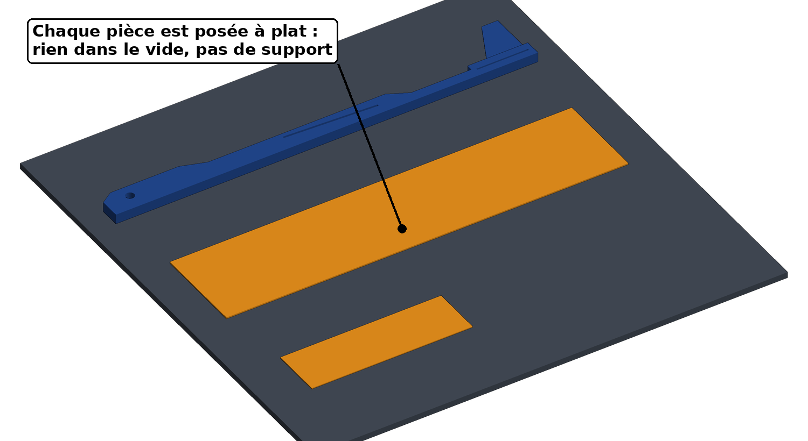
Mission réussie si le professeur a reçu tes trois fichiers et qu'ils s'ouvrent dans le logiciel de l'imprimante.
Teste ton planeur avant de l'imprimer. Entre ses valeurs, regarde le vol prévu, change un seul réglage à la fois. Puis note la distance prévue dans ton carnet : après les vrais lancers, tu compareras.
1 carreau = 1 cm. En rouge : ce que tu es en train de changer. La barre verte sous l'aile montre où doit tomber le point d'équilibre.
Comment le simulateur calcule (et ce qu'il ne sait pas)
Le simulateur traite le planeur comme un objet qui avance, monte, descend et bascule autour de son point d'équilibre. Toutes les 2 millièmes de seconde, il calcule quatre forces et recommence :
- le poids, à partir de la masse ;
- la portance de l'aile, à partir de sa surface, de sa vitesse et de son inclinaison dans l'air, avec un maximum : au-delà, l'aile décroche ;
- la portance du stabilisateur, qui ramène le planeur à plat ;
- la traînée, qui freine.
Ce qu'il ne sait pas : les bavures, une aile montée de travers, le vent, un lancer qui part en biais. Ses coefficients sont des ordres de grandeur pour une plaque fine. Il donne donc bien les tendances (ce réglage est meilleur que celui-là, il va cabrer, il va piquer), mais pas la distance au mètre près.
Un écart entre la distance prévue et la distance mesurée n'est pas une faute : c'est un résultat. Ton travail est de l'expliquer.
Mon protocole d'essai
Un protocole, c'est la recette de ton expérience : quelqu'un d'autre doit pouvoir refaire exactement les mêmes essais en le lisant. Écris-le avant le premier lancer.
Carnet d'essais
Trois lancers par version, par le même lanceur et de la même façon. Le site calcule la moyenne, l'écart entre tes versions, et l'écart entre ce que le simulateur avait prévu et ce que tu as mesuré. Connecté, ton carnet est gardé sur ton compte. Imprime-le pour le rendre.
| Version | Masse (g) | Lancer 1 (m) | Lancer 2 (m) | Lancer 3 (m) | Moyenne | Prévu par le simulateur (m) | Écart prévu / mesuré | Ce que j'observe en vol |
|---|
Entre la version 1 et la version 2
Bien lancer à la main
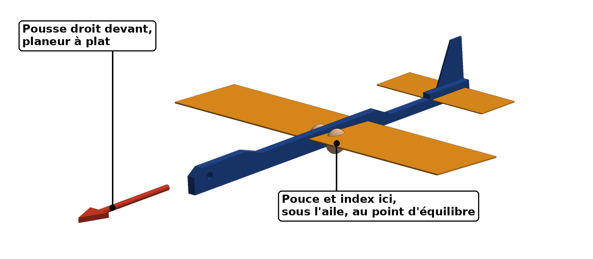
- Tiens le fuselage entre le pouce et l'index, juste sous l'aile, là où il tient en équilibre.
- Planeur à plat, nez à peine vers le bas. Vise un point au sol à une dizaine de mètres.
- Lance franchement, droit devant, comme une fléchette, sans viser le haut. Un planeur de 25 g a besoin d'environ 8 m/s pour voler : un geste trop mou, et il tombe.
- Le même lanceur fait tous les lancers de l'équipe, de la même façon. Un lancer raté (planeur qui glisse des doigts) se refait.
Lire le vol de ton planeur
Voir tous les cas dans un tableau
| Ce que tu vois | Cause probable | Modification à essayer | |
|---|---|---|---|
| Il lève le nez, ralentit, puis tombe | Centre de gravité trop en arrière | Ajouter un peu de lest dans le nez (1 à 3 g), puis relancer | |
| Il pique et touche le sol tout de suite | Centre de gravité trop en avant | Enlever du lest du nez, par petites quantités | |
| Il part toujours du même côté | Aile pas centrée, ou dérive tordue | Recentrer l'aile, vérifier la dérive | |
| Il vole droit mais pas loin | Trop lourd, ou trop de traînée | Alléger la queue, affiner le fuselage | |
| L'aile se plie au lancer | Aile trop fine ou trop longue | Raccourcir l'aile ou l'épaissir de 0,2 mm |
Comment le projet est noté
Note sur 20. La distance du planeur ne compte que pour 2 points : ce qui est noté d'abord, c'est ta façon de travailler.
Les critères, niveau par niveau
Pour chaque critère, le professeur te place sur un des quatre niveaux. Lis la colonne de droite : c'est ce qu'il faut viser.
Ce que tu apprends : le programme officiel
Ce projet suit le programme de seconde des enseignements Création et innovation technologiques (CIT) et Sciences de l'ingénieur (SI). Chaque compétence du programme a son activité ici.
| Compétence du programme | Où tu la travailles |
|---|---|
| CIT · Mettre en œuvre une démarche de projet et de créativité | |
| Travailler en équipe | « Les étapes » 2 : former l'équipe, document partagé. Critère F. |
| Sélectionner des références et des ressources documentaires | « Créer » : les six formes qui volent déjà, tes deux références. |
| S'initier au vocabulaire de l'innovation et de la créativité | « Le défi » : le vocabulaire de l'ingénieur. |
| Utiliser des méthodes de créativité | « Créer » : trois idées, les cartes « Et si… », les règles de la recherche d'idées. |
| Appréhender les méthodologies en design de produit | « Créer » : dessiner à l'échelle, forme, couleurs, nom. |
| Formuler des propositions et retenir les solutions les plus pertinentes | « Créer » : le tableau de comparaison et le choix justifié. Critère E. |
| Identifier les contraintes réglementaires, environnementales et économiques | « Le défi » : le cahier des charges, le coût et le cycle de vie. |
| Élaborer une solution innovante | « Atelier 3D » : ta version 1 (prototype), puis le planeur du concours. Critère B. |
| SI · Raisonner, pratiquer une démarche scientifique, expérimenter | |
| Identifier un principe scientifique en rapport avec le fonctionnement d'un système | « Comprendre » : les sept notions et leurs figures. Séries notées. Critère A. |
| Simuler à partir d'un modèle donné | « Simulateur » : le vol prévu, un réglage à la fois. |
| Réaliser et matérialiser un support d'expérimentation | Le planeur imprimé, la ligne de départ, le décamètre. |
| Mettre au point un protocole expérimental | « Mes essais » : mon protocole d'essai. |
| Manipuler et expérimenter | « Les étapes » 1 et 6 : les lancers. Critère C. |
| Analyser les résultats obtenus (mesures, précision, écarts, tableur, graphique) | « Mes essais » : moyenne, étendue, écarts, graphique, export pour le tableur. Critère C. |
| CIT et SI · Présenter et argumenter | |
| Exprimer une réflexion, un principe, une idée, une solution technique | « Créer » : pourquoi je choisis cette idée. « Mes essais » : la modification et sa raison. |
| Utiliser des outils de communication (croquis, schémas, représentations numériques) | Le dessin de « Créer », le modèle 3D, la fiche du planeur, le graphique. |
| Rendre compte, à l'écrit ou à l'oral, d'une analyse, d'une expérience, d'une recherche | Le carnet d'essais, et tes deux minutes devant la classe (dernière étape). |
Source : programme d'enseignement optionnel de CIT et de SI de seconde, Bulletin officiel spécial n° 1 du 22 janvier 2019. Thème : la mobilité, dans « les territoires et les produits intelligents », champ « matériaux et structures ».
Les trois séries notées du site
Elles sont sur ton tableau de bord, dans « Projet planeur ». Tu peux les refaire : les questions et les valeurs changent, et c'est ta meilleure note qui compte.
- Planeur 1 · Voler et rester stable : à faire avant de dessiner.
- Planeur 2 · Dessiner et imprimer : à faire pendant le travail dans l'atelier 3D.
- Planeur 3 · Essayer, mesurer, améliorer : à faire avant les essais de la version 1.